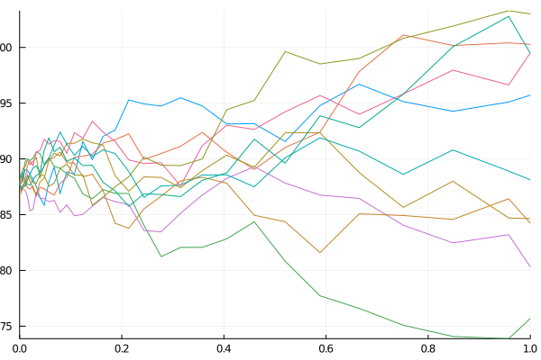

Tutorial 4: Simulation


In this tutorial, you will learn:
- How to simulate, i.e. numerically solve, dynamical systems.
Introduction
In the previous tutorials we have learned how to declare dynamical systems and briefly shown how to solve them using a numerical scheme. Now we focus on Monte Carlo simulations, i.e. solving the SDEs for many trajectories.
Setup
The first step is to load the pertinent libraries for the tutorial:
using UniversalDynamics
using UnPack
using PlotsSimulation
We need a dynamical system first. The most simple case is probably the BSM model, which has been already described and used in previous tutorials:
S0 = @SVector rand(1)
S = SystemDynamics(S0)
function f(u, p, t)
@unpack _securities_ = p
@unpack _S_ = _securities_
# unpack risk-free rate parameter
@unpack r = p
S = remake(_S_, u)
dS = r * S(t)
return SVector{1}(dS)
end
function g(u, p, t)
@unpack _securities_ = p
@unpack _S_ = _securities_
# unpack volatility parameter
@unpack σ = p
S = remake(_S_, u)
dS = σ * S(t)
return SVector{1}(dS)
end
dynamics = [:S => S]
params = (r = 0.05, σ = 0.1)
ds = DynamicalSystem(f, g, dynamics, params)1-dimensional dynamical system with 1-dimensional DiagonalNoise
state: [0.373523]
in-place? false
Dimension: 1
Noise dimension: 1
diagonal noise? trueNow we can simulate for any number of trayectories:
# the number of trajectories
N = 10
sol = montecarlo(ds, 1., N; seed=1)
plot(sol)
We can also change both the default Monte Carlo scheme and the ensemble algorithm:
sol = montecarlo(
ds, 1., N;
alg=UniversalDynamics.EM(), dt=0.01, ensemblealg=UniversalDynamics.EnsembleSerial(), seed=1
)
plot(sol)This page was generated using Literate.jl.